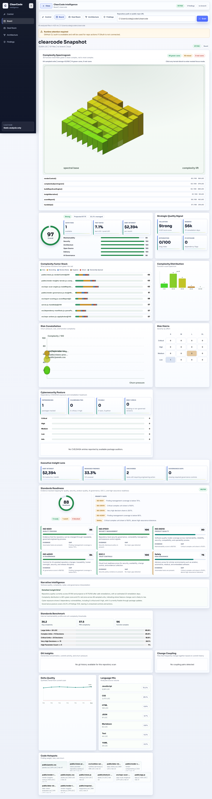
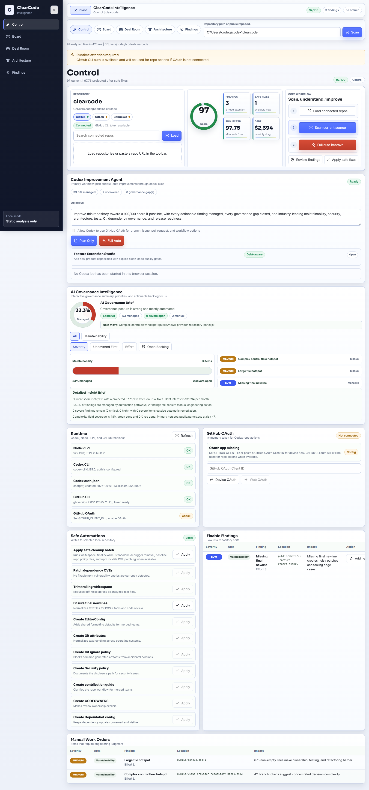
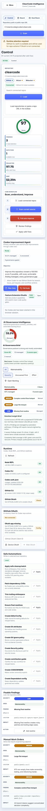

Executive visibility
Software quality translated into decisions.
ClearCode surfaces complexity terrain, strategic quality signals, dependency posture, git churn, ownership concentration, standards readiness, and prioritized findings in one polished workspace.

Governance and remediation
Know what matters, then act on it.
The control view puts source selection, scanning, score movement, findings, safe fixes, and full-auto improvement in the primary workflow instead of burying the most important actions.

Codex-powered improvement loop
Scan, understand, improve, verify.
Designed for technical leaders who need both board-level clarity and practical engineering control across local repositories and connected GitHub projects.
Connect
Load connected repositories or scan a public GitHub URL.
Analyze
Review quality, risk, architecture, cyber, and git-based change signals.
Improve
Apply safe fixes or run Codex-guided remediation plans.
Govern
Track standards readiness, managed findings, and remaining work.
Responsive by design
Built for boardrooms, war rooms, and quick reviews.
The experience remains usable on smaller screens while preserving the core scan and improvement workflow.
